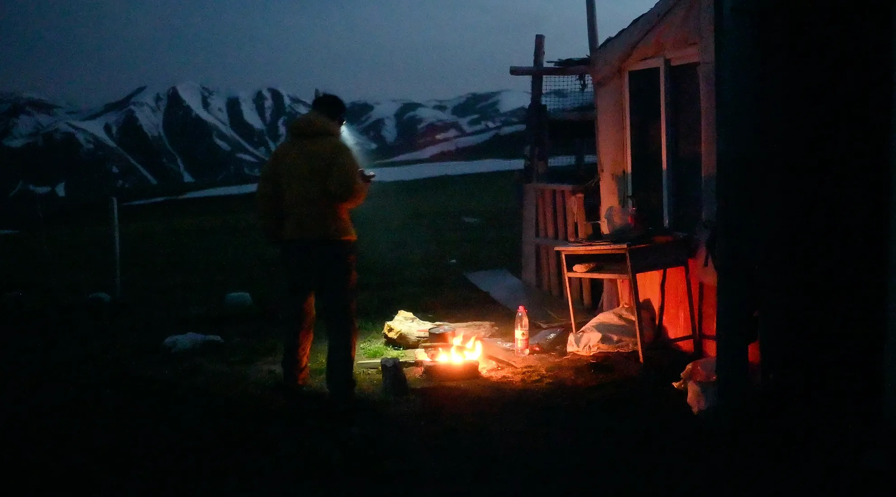
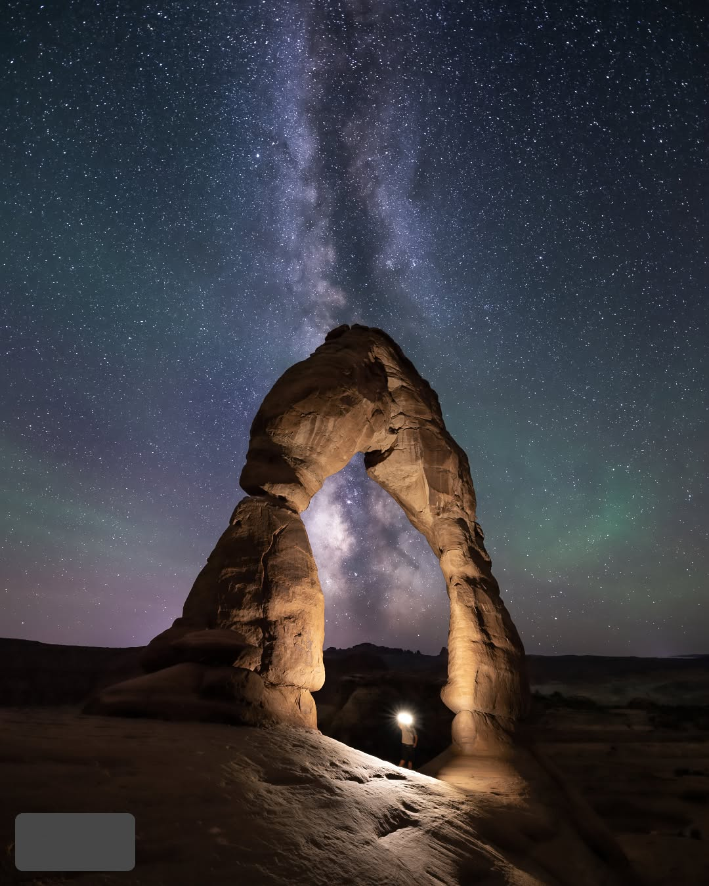
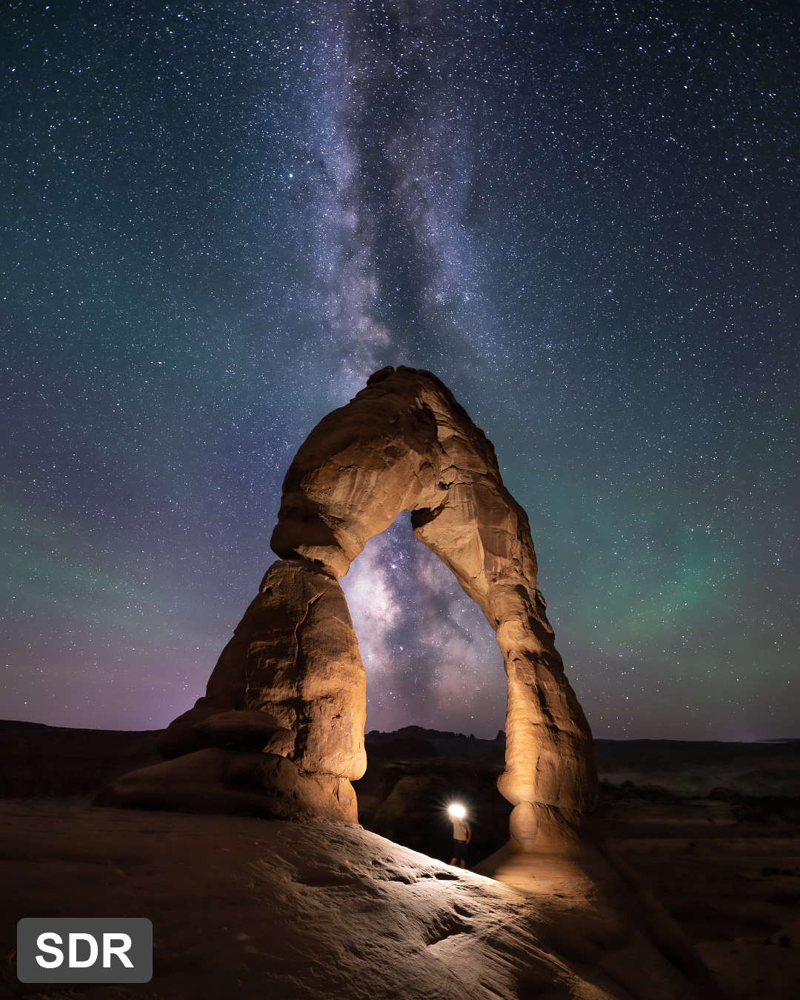
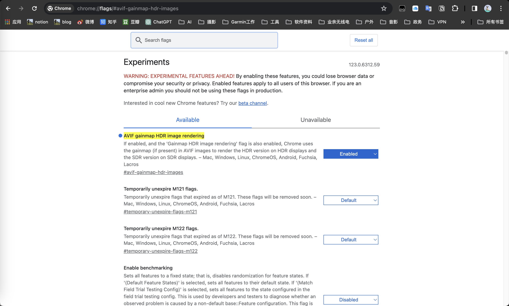
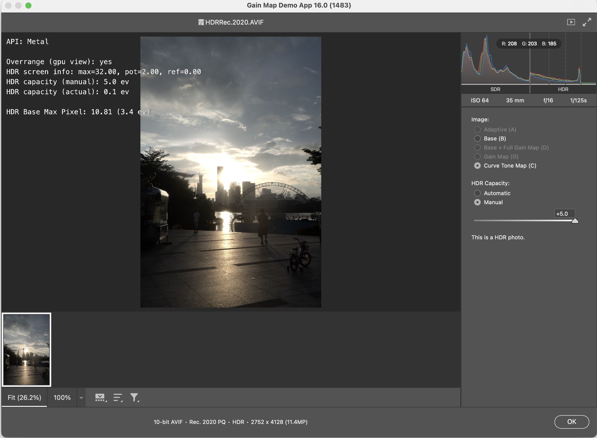
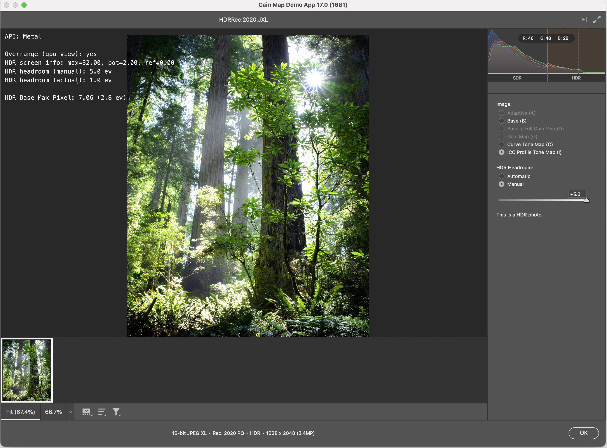
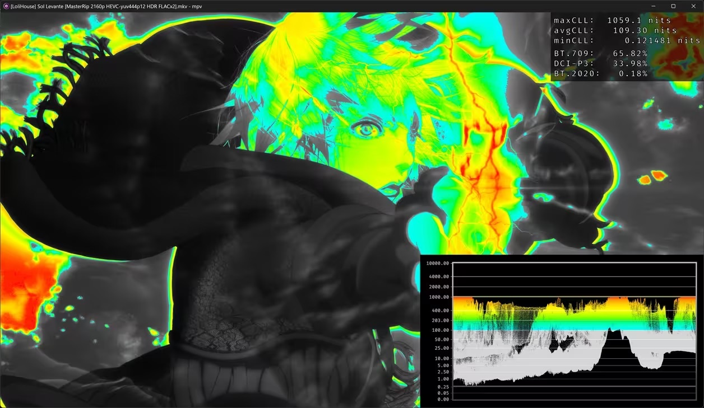
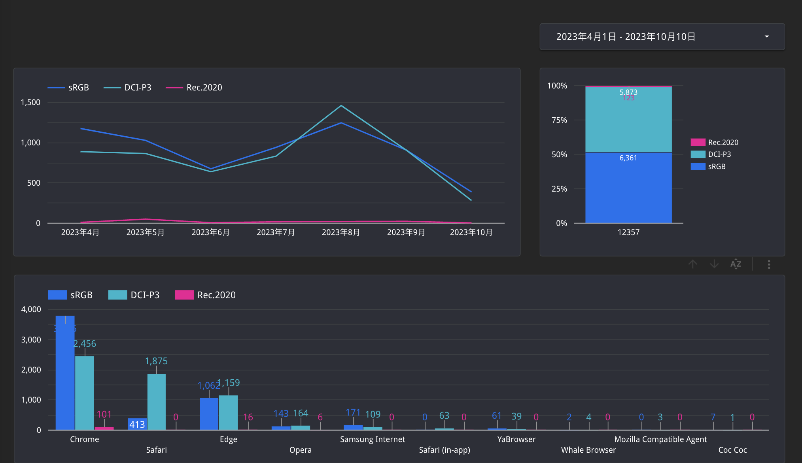

HDR（高动态范围）图片制作的资料和工具快查表

📑 目录
前言
HDR发展进程(完全不完整的时效简讯)
@2025年4月25日 看到一名群友用鸿蒙版微信发的视频原图，居然有HDR效果，HLG曲线，Windows看是过爆的，Macos看还不错，这是视频:[Google云盘下载URL]2024年5月13日 逛wiki的时候关注到了一场有关HDR的行业会议，参会者有linux、AMD等公司的技术高层，虽然没有公布他们要讨论什么具体的内容,不过大概率是底层技术,显示器硬件适配相关, 查看原帖作者：https://github.com/melissawen/2024linuxdisplayhackfest/wiki 查看原帖新闻：https://events.pages.igalia.com/linuxdisplaynexthackfest/ 查看参会者名单：https://github.com/melissawen/2024linuxdisplayhackfest/wiki/list-of-participants
2024年5月10日 人肉发现小红书支持HDR视频，通过[解析小红书视频]工具扒下原视频后再通过EXIFTOOL查看其规格，发现是HLG、4:2:0、60FPS、HEVC、10bit，色彩溢出很严重 查看视频原帖[「HDR」]
（20240401）微信视频号可以支持PQ+H265（hevc）+444（HDR10）编码的HDR视频了。但目前444的H265视频只有pixelmator能够制作
（20240320）👇由小米和华为等公司牵头的**国内团体技术标准方案**和文档（总结：国内图片HDR的技术标准要统一了，不跟果子统一） [高动态范围(HDR)静态图像 第 1 部分-双层格式.pdf] [关于《高动态范围（HDR）静态图像 第 2 部分：单层格式》等 4 项团体标准立项及征集起草单位的公告] [《高动态范围（HDR）静态图像 第2部分：单层格式》.pdf] [《三维声音技术规范 第2-2部分：应用指南 媒体格式》.pdf] [《超高清显示器屏幕发声技术规范》.pdf] [《面向会议场景无线传屏技术要求和测试方法》.pdf]
（2024/03/13）👉ins的web和APP端开始支持HDR图片上传（avif、png）来源HDR-NGA
（2024/03/05）👉一个叫yabivision的小工具可以将LR导出的图片（avif)转成ins支持的jpeg格式且带有黑白gain map的HDR图片。👉资源链接[yabivision]
（2024/03/05）👉目前只有adobe流程输出的是彩色gain map，它相较于黑白gain map的缺点是目前支持的社媒平台更少。且彩色gain map的体积会比单色gain map大。但如果从映射到sdr的表现来说彩色会更好。此外两者如果单论显示hdr的效果，是一样的。。。(最后一句话的信息来源：HDR-NGA）
（2024/03/05）👉三星s24 pixel 7/8、一加12海外版、小米14u，目前都可以拍jpg+gain map（黑白）；果子是heic+（黑白）gain map。果子的heic gain map可以通过转换工具转换为jpeg的gain map。资源链接 https://testflight.apple.com/join/AtFppKIy
（2024/03/05）👉pixelmator导出的具有黑白gainmap层的HDR图片已经收ins支持（需要用chrome网页版ins上载，且只能在chrome上看）
（2024/03/05）👉B站HDR视频转SDR策略（省流：高光压缩，暗部不动）[B站自研色彩空间转换引擎]
（2024/01/26）👉~~B站网页端开始支持HDR图片上传和查看，不过上传和正确查看HDR都必须使用最新版Chrome~~（2024/03/11，这条信息辟谣了）
（2024/01/26）👉这应该是iso gainmap方案标准，目前在WD阶段 [ISO/WD 21496-1]
（2024/01/26）👉让RTX Video HDR 支持本地播放器的MPC Video Renderer版本 https://github.com/emoose/VideoRenderer/releases
（2024/01/26）👇人工智能驱动的 NVIDIA RTX（RTX Video Super Resolution） 可以将SDR视频转变为令人惊叹的HDR高动态范围，目前仅支持chroma（虽然官方说它支持edge，但似乎效果并不好）https://blogs.nvidia.com/blog/rtx-video-hdr-remix-studio-driver/


（2024/01/26）Meta在其旗下两大社交平台Facebook和Instagram上对于引入并支持HDR技术的实践与思索 [Bringing HDR video to Reels]
（20231215）Pixelmator Pro（版本号3.5）可以直接导出视频的单帧的HDR图片（主流格式都支持AVIF HEIC JPEG PNG）破解版资源：[pixelmator pro破解版] 这是官方blog： [Pixelmator Pro 3.5 brings full HDR support - Pixelmator Blog]
（20231128）Google pixei 8系列手机的短信app支持基于gain map的Ultar HDR图片，官方宣称10bit(Android底层是支持HDR的）
（20231123）photomator今日提供了最新版本，支持HDR照片输出，并且可以通过添加Gain Map的方式将SDR照片映射为HDR [白皮书JOSA.23.000394.pdf]
（20231004）Android14开始支持HDR图片，包括AVIF格式。目前的资料来看，是基于Gain map的
（20231011）手机端的Lr、ps也开始支持HDR编辑和导出。ACR开始内测导出时嵌入Gain maps信息
想了解HDR图片与普通图片的区别？请查看下方链接中的顶级HDR图片
https://people.csail.mit.edu/ericchan/hdr/hdr.php 在开始制作和查看HDR图片之前，需要确认当前软件和硬件环境是否支持观看HDR。下面这些在线工具可以很方便地查看当前观看环境是否支持HDR，请使用chroma最新版本打开他们，否者可能影响正常发挥作用。
PQ_100_to_10000nits

PQ_10_to_1000nits

来自gregbenzphotography

来自gregbenzphotography
重要注意事项：
*在ACR上进行HDR照片监看和后期时需要注意不能禁用GPU图形处理器。 *在Chrome则需要在开发者实验室栏目里确认对应的功能是否被禁用 Chrome中的操作步骤为：在地址栏上打开下面这个地址，搜索JPEG-XL、AVIF、HDR等关键词，找到下图的选项确保其不是关闭状态，最好设置为常开（2024年9月21日 。
chrome://flags/#enable-jxl
chrome://flags/#avif-gainmap-hdr-images

工具与资源清单：
帮助你检查当前观看环境是否支持HDR，此外还包含当前显示器色域覆盖范围 [Wide Gamut - Home Page] 帮助查看当前环境HDR测试页： [Avif HDR diagnostic page] HTMLtext，查看当前浏览器和系统信息 [HTML5test - How well does your browser support HTML5] Gain Map Demo App，制作adobe系列的HDR图片制作的必备工具，需要在adobe官网自行下载


目前HDR内容在web端的支持情况

色域覆盖范围统计
B站：
B站HDR视频转SDR技术标准：B站自研色彩空间转换引擎微博：
小红书：
2024年5月10日**人肉测试支持HDR视频，规格还未确定。查看[「HDR」]ins:
人肉测试过ins目前支持HLG和PQ的HEVC+10bit+4:2:0+MP4的HDR视频，还有AVIF格式+p3色域的HDR图片youtube:
微信：
人肉测试过视频号支持HEVC+10bit+4:4:4+PQ的HDR视频，但目前视频规格下的4:4:4+HEVC（H265）好像只有pixelmoator能输出Q&A： Q：什么是单色Gain map和彩色gain map A：https://zhuanlan.zhihu.com/p/685259485
Q：PQ/ST2084 (Perceptual Quantizer)和HLG/ST2086(Hybrid Log-Gamma)区别 A：HLG旨在实现向后兼容性，这意味着即使在不支持HDR的设备上也能勉强观看HDR内容；PQ提供了更好的视觉效果，但向SDR兼容不佳。PQ和HLG两种标准制作的HDR图片在HDR环境下观看并无明显差异。
Q：DV（Dolby Vision）HDR和HDR10的区别和解释 A：DV和PQ、HLG、HDR10同类型，决定的是映射（待补充）
Q：P5和P8（dolby Profile8.1和dolby Profile5）是什么，有什么区别 A：
Q：HEVC10，H265的解释和区别 A：HEVC10就是H265
Q：4:4:4和H265、H264的关系 A：色度抽样率4:4:4和H264、H265没有直接关系，H265（HEVC）、H264（AVC）是一种视频压缩（编码）标准
Q：MP4和H265、H264的关系 A：MP4是封装格式（标准），和编码标准不冲突。可以使用H265编码然后放入MP4格式中
Q：杜比视界（**Dolby Vision）、HLG、PQ、**HDR10、HDR10+的解释和区别。 A：杜比支持动态元数据，HDR10只能静态元数据。动态元数据更好，动态元数据能够根据不同画面需求设置合理的最高亮度，而HDR10从始至终最高亮度是固定的，可能会出现过曝。HDR10采用了PQ,PQ是静态元数据。Dolby Vision是动态元数据。HDR10+是动态元数据。
Q：HDR Vivid是什么？ A：HDR Vivid是UWA也就是国内的世界超高清视频产业联盟发布的一种HDR标准，具体可以查看公众号世界超高清视频产业联盟
Q：为什么AVIF的HDR图片在Mac os 13.4上预览会变成灰色？ A：macOS14才开始部分支持AVIF，之前的版本都不能正确预览HDR。
Q：为什么用ios17微信发送AVIF格式的HDR照片会得到一张8bit，JPG格式的HDR照片？ A： 1、JPG、HEIC的HDR方案是：8bitSDR （基础层）+ Gain Map（增益层）=HDR 2、AVIF、JPG-XL、HEIF的HDR方案是：10bitHDR（基础层）+Gain Map（增益层）=SDR 3、JPE、HEIC只支持8bit色深 4、Gain Map，一种能够类似ACES的能够使HDR图片在SDR环境（或者SDE图片在HDR显示环境）上正确映射色彩关系的一种向后兼容的技术方案 在把AVIF、JPG-XL、HEIF格式的HDR图片强行封装成JPG、HEIC格式时，由于JPE、HEIC只支持8bit色深，就会让原本的10bitHDR数据变成8bitHDR，并且丢失Gain Map，那么就得到了一张8bit并且有HDR的JPG图片，但由于没有Gain Map层，所以他在SDR监看环境下会出现严重断层和失真。 用一个不太恰当但直观的公式解释关于8bit JPG HDR照片的生成过程：
AVIF·(10bitHDR+GainMap)-(2bit+Gainmap)=JPG
Q:那么制作通过这种方法制作jpg的HDR有应用环境吗？或者jpg8bit的HDR是否有意义？ A:首先明确HDR技术的目的，带来更好的显示效果（广色域+高动态范围）,然后jpg的8bit并不支持广色域，也不适合高动态范围。并且HDR技术更多是用在风光摄影，照片里经常出现天空等“渐变”的画面，8bit的色深实在太浅了，通过奇怪的方法把AVIF重新封装为JPG，10bit会被强行裁切为8bit，这个裁切没有任何算法过渡，可能更容易出现色阶断层。总结下来就是弊大于利。